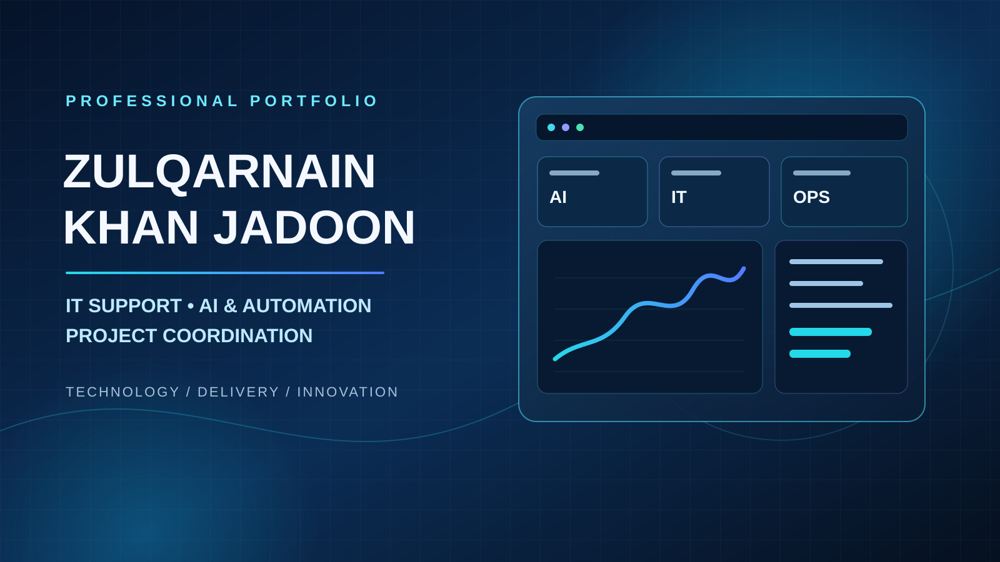
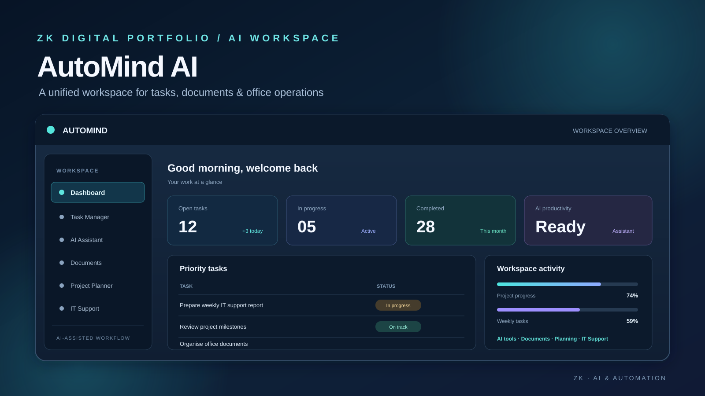

Zulqarnain Khan Jadoon
Computer Science graduate focused on practical IT support, AI-assisted workflows, automation and coordinated digital projects.
My Featured Projects
Practical work, real project evidence and interactive demonstrations


IT Support & Infrastructure
IT support workflows, infrastructure topics, troubleshooting and practical documentation.
View project →


Corporate Project Management
Planning, coordination, task summaries and structured project delivery.
View project →


Digital Marketing & E-commerce
Practical campaign and e-commerce project work, presented with clear deliverables.
View project →
AI Projects & Live Demos
Explore AI-assisted tools, workflow automation and interactive project demonstrations.
View demos →
Software & Coding
Selected Python and C++ work, tools, source code and technical experiments.
View projects →Original Portfolio Archive
Revisit the earlier portfolio version and its preserved layout and content.
Open original version →Technology, Organisation & Practical Delivery
About Me
I am a Computer Science graduate with a practical, organised approach to technology and day-to-day work. I enjoy helping people solve technical problems, making work processes clearer, and using digital tools to support teams and projects.
My experience and project work bring together IT support, AI-assisted productivity, prompt engineering, workflow automation and project coordination. I have developed portfolio projects and practical demonstrations using tools such as Python, C++, Streamlit and Gradio, alongside documentation, presentations and visual design work.
I have completed Google Professional Certificates in IT Support, Project Management and Digital Marketing, as well as Google AI learning. I value clear communication, continuous learning and delivering work carefully rather than overstating my abilities.
Based in Abbottabad, Pakistan, I am open to suitable opportunities in Pakistan and internationally, including relocation.
Core Skills & Tools
Let's Build Something Meaningful
Interested in IT support, AI-enabled workflows or project coordination opportunities?
Visit GitHub Profile ↗ Explore Projects ↗